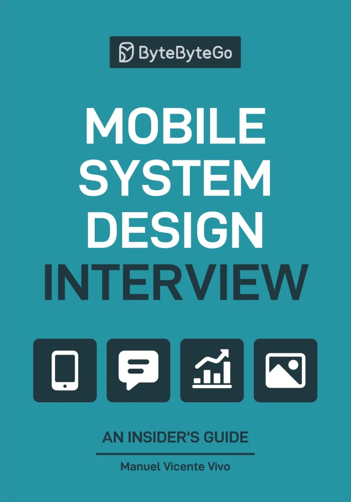

Mobile System Design
Unlike general system design books, this is the first comprehensive guide written specifically for mobile platforms.

Nail your next interview!
Whether you're facing challenges like "Design YouTube" or "Build a chat app", you'll learn a proven framework that works for both Android and iOS.
Who should read this book?
This book is built for YOU — whether you're:
- 📱 Mobile Engineer: Gearing up for interviews at top tech companies.
- 🏗️ Tech Lead: Sharpening your architecture skills and guiding your team.
- 🚀 Engineering Leader: Curious about mobile internals and best practices.
It's perfect for both Android and iOS engineers who want to master the art of designing scalable, performant mobile systems.
What's inside
The book covers 10 comprehensive chapters designed to take you from basics to advanced mobile architecture.
What you'll learn
- 🏆 A proven 5-step playbook: Turns any "Design X" prompt into a structured answer that speaks the interviewer's language.
- 📝 7 fully solved questions: Every decision, diagram, and pitfall exposed for real-world apps.
- 🔢 175 topics: Covering the full spectrum of mobile system design principles.
- 🔧 Practical to the core: Real-world case studies, reusable checklists, and trade-off cheat sheets.
Still unsure?
Read the first chapters for FREE!What readers say
Walk into the interview with a playbook and leave with a 'yes'
Make 'it depends' sound like clarity, not hesitation
This book isn't just about interview prep. It's about learning to think like a senior engineer. If you're preparing for senior roles, architecture discussions, or just want to level up your fundamentals, then this is a must-read. Let's not just automate more. Let's understand more. 🔍
Lead the design discussion. Align iOS + Android. Ship with confidence.
Raise the bar for mobile architecture across your team
Set a mobile architecture standard your org can scale
Do you want to tackle complex mobile design with clarity and confidence?
Grab your copy now!Frequently Asked Questions
📱 Is the book available in digital format (eBook, PDF, Kindle)?
The book is currently only available in paperback format. We're working on a digital version, but it's not available yet. Stay tuned for updates!
🌍 Can I buy the book anywhere besides Amazon?
The book is available through Amazon with international shipping to most countries.
If you're in India and cannot get it through Amazon, you can order it directly from our Indian publisher: Shroff Publishers.
🆓 Can I preview the book before buying?
Yes! You can read the first chapters for FREE to get a feel for the content and approach.
🤔 Is this book only for interview preparation?
While the book is excellent for interview prep, it's also valuable for:
- Learning to think like a senior engineer
- Understanding mobile architecture best practices
- Making better architectural decisions in your daily work
- Leading architecture discussions with your team
📖 What are the book details?
ISBN: 1736049151 / 978-1736049150
Publisher: ByteByteGo
Publish date: Jun 06, 2025
Pages: 293